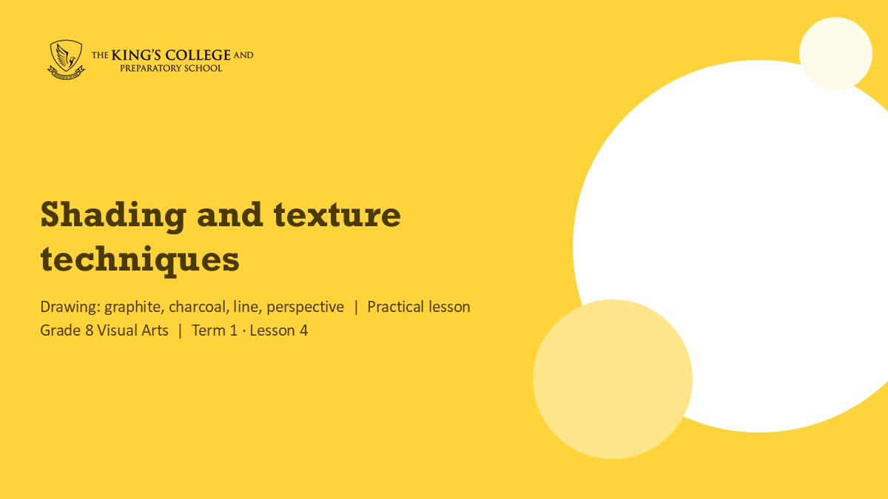

Term 1 · Lesson 4 · Theory and practical lesson
Value: pencil grades and the value scale
Start here
Today I will
- Today I will learn what the H and B pencil grades are for
- Today I will control pressure to make lighter and darker tones
- Today I will make a 9-step value scale and a smooth gradation strip
Think first
How many different greys do you think one pencil can make?
Words to Know
| Word | Meaning |
|---|---|
| Value | An element of art: how light or dark something is, from white to black. |
| Tone | Another word for value: how light or dark an area is. |
| Value scale | A strip of boxes showing a step-by-step range of tones from white to black. |
| Gradation | A smooth, gradual change from light to dark, with no steps. |
| H and B grades | H pencils are hard and make light, thin lines; B pencils are soft and make darker lines. HB is in the middle. |
| Pencil pressure | How hard you press: light pressure gives light tones and heavier pressure gives darker tones. |
Slides

Videos
Notes
Value (tone) from white to black; H and B pencil grades; pressure control; stepped scale versus smooth gradation.
Pencil grades
| H pencils (hard) | B pencils (soft, black) |
|---|---|
| Light, thin, crisp lines | Dark, rich, soft lines |
| Good for light guidelines and planning | Good for shading and deep shadows |
| Smudge very little | Smudge easily, so rest your hand on a scrap of paper |
| 2H is lighter than HB | 6B is darker than 2B |
Steps or smooth?
| Stepped value scale | Smooth gradation |
|---|---|
| Separate boxes, each a little darker | One strip with no edges or steps |
| Trains your eye to see small differences | Trains your hand to change pressure slowly |
| Used to check and match tones | Used to shade round forms like a ball or a face |
Remember
Start light, build slowly: value is what turns a flat shape into a form.
Practical
You need: Visual journal, 2H, HB, 2B, 4B and 6B pencils, plastic and putty erasers, blending stump
Grade strip, value scale and gradation
- Grade strip: shade one small patch with each pencil (2H, HB, 2B, 4B, 6B) and label it.
- Value scale: rule a strip of nine equal boxes.
- Leave box 1 white: the paper is your lightest value.
- Shade boxes 2 to 9 a little darker each time, changing pencil as you go, until box 9 is as dark as you can make it.
- Squint at the scale: each box should be a step darker than the one before. Fix jumps with layers or the putty eraser.
- Gradation strip: shade one long strip from dark at one end to white at the other with no visible steps.
Assessment
Term 1 Assessment due (Friday).
Test yourself
- Which is darker: a 2H or a 6B?
- What is the difference between a value scale and a gradation?
- Why do we start shading with light pressure?
Show answers
1. A 6B. 2. A value scale goes in separate steps; a gradation changes smoothly with no steps. 3. It is easy to add more tone, but hard to make an area lighter again.
Finished early?
Five-step mini gradation
Can you shade a smooth change from light to dark with no stripes?
- Draw a rectangle about 10 cm long in your visual journal.
- Start at one end with white paper and shade towards the other end, getting slowly darker.
- Use the side of the lead (shading grip) and change pencils from HB to 6B.
- Squint at it: if you can see a jump, add a light layer to smooth it out.